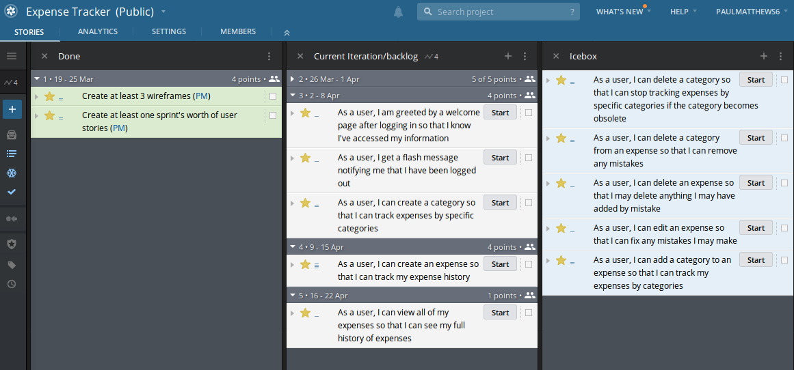

Demo Project: Expense Tracker
Quick Links
- Assignment Repository for Expense Tracker
- Expense Tracker GitHub Repository
- Pivotal Tracker Project
- Jump to week: 1 | 2 | 3 | 4 | 5 | 6 | 7 | 8
Overview
For his Liftoff project, Paul has decided to create a web application that will help him track his expenses. This page will outline the steps that he follows in developing his project, completing each of the Liftoff assignments along with completing user stories and participating in the weekly agile ceremonies like stand-ups and project kickoffs.
Week 1
Sprint 1 Kickoff
Most sprint kickoffs will consist of planning estimating, and committing to user stories to complete during the sprint. Since there are not user stories created yet (we'll do that in week 2) this kickoff is a litle different.
We discussed our project ideas--Chris' for an event log and Paul's for an expense tracker--and got some feedback on how big each project might be to be doable. We also discussed the particular technologies that we'll be using to build our projects.
Finally, we discussed the things that we expect to have to learn along the way, beyond what we already know. Paul will be using a new-to-him framework called Rocket (for the Rust programming language), while Chris has some unknowns around how user authentication will work. He also wants to use test-driven development which he hasn't done in Spring and will have to learn about.
Assignment: Project Outline
The project outline for Expense Tracker gives an overview of the desired functionality.
Week 2
Sprint 1 Standup
During our sprint 1 standup, we discussed our completed project outlines and upcoming work. Here are Paul's items.
What was accomplished: The Expense Tracker project outline was completed, and the preliminary features have been set. Concerns about Rocket's non-existant user authentication were discussed, and ultimately it was determined that Paul will build his own User Authentication.
What is planned next: User stories will be written, prioritized, and wireframes will be created.
Blockers: No blockers have been identified so far, however user authentication will be hand created, and Diesel, an ORM for Rust and Postgres, will need to be researched.
Assignment: Project Planning
The Project Planning includes 4 wireframes for the Expense Tracking application. A link to the Pivotal Tracker project that contains user stories for the current sprint, and upcoming stories in the icebox.
Here is a screenshot of the tracker with initial user stories.
Week 3
Sprint 1 Review and Retrospective
For the spring review/retro Chris and Paul discussed the work completed during the first. Both completed initial project planning and setup. Working through some details such as wireframes and user stories helped clarify the initial work to be done, which will begin in earnest this week as the second sprint kicks off.
During the retrospective portion of the discussion, the discussed how in some ways it didn't feel like much had gotten done since there wasn't much, if any, code written. Paul made the point that while little code was written, the planning that was done should help the initial coding phase of the project go more quickly than it otherwise would. He noted that if a programmer just jumps into a project without designing and planning the work to be done, a lot of time can be wasted in doing things inefficiently, reworking portions of the app, and generally figuring out how it should be structured. Doing this work up front should make things go more smoothly from now on!
Assignment: Project Setup
Assignment submission in liftoff-assignments
The project's GitHub repository was set up. Initial commits created a basic "Hello world" Rocket application via the Rocket Quickstart.

Sprint 2 Kickoff
For the second sprint, Paul plans on working through the initial user stories, which are focused on basic user management (registration, login, logout). He couldn't find any good external crates in Rust to help with user authentication. He will be forced to create user authentication on his own, and plans to use the same concpets we learned in Unit 2 -- Password Hashing & Salting.

As an overview:
- As a prospective user, I can create an account.
- As a user, I can login to my account.
- As a user, I can logout.
In order to complete these stories he will have to create a User model, and setup the project's database. He will have to start learning about Diesel (an ORM for Rust, and Postgres) in order to close down this batch of user stories.
If he completes these three stories, there are more stories planned for future sprints, and stories in the backlog.
Week 4
Since there wasn't a Project Module assignment for week 4, the focus was on completing user stories, and gaining momentum.
Sprint 2 Standup
What was accomplised: User Registration, User Login, and User Logout stories were all complete. (See associated commits, and screenshots below.) Paul wanted to make more progress than he did, but ended up sinking a lot of time into the aspects of his project he didn't understand well. He had to build smaller tutorial projects to understand the ORM, and how templating works in his tech stack. Now that he has them working correctly, he should be able to make quicker progress in completing user stories.

View the codebase for expense-tracker as of the end of sprint 2.
Screenshots:
{kind=link}
{kind=link}
What is planned next: Next, Paul will work on a landing page after a user logs in, flash messaging, and the category model. He has created, and estimated new stories for the remainder of this sprint and moved them into Current Iteration column (see Pivotal Tracker screenshot below).

Blockers: Currently Paul is blocked by flash messaging. He understands the concept, but has never implemented flash messaging in a Rust/Rocket project. He will have to learn more about flash messaging in Rocket by referring to the Rocket Documentation for a Flash Response. He has a lot of reading, and trial projects to complete before he can successfully implement flash messaging in his project, which is his next user story.